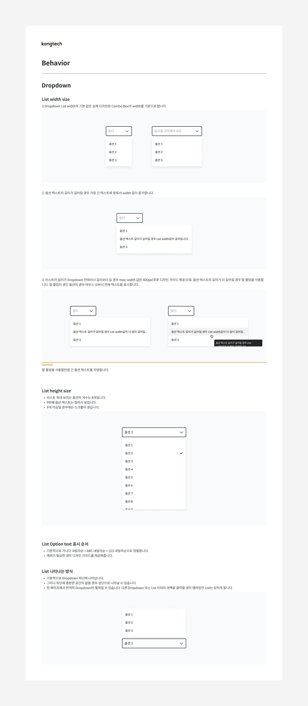
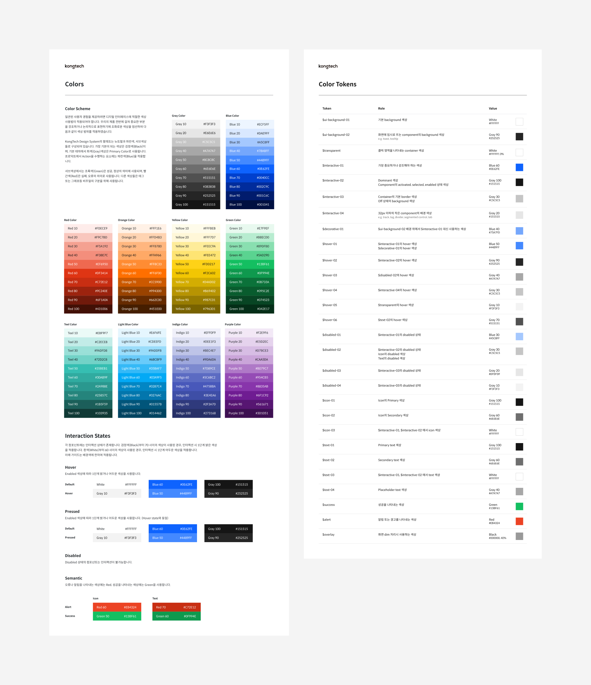

위치기술 기반 디지털트윈 플랫폼인 오브로의 디자인 개념을 정의하고 이에 따른 디자인 패턴 및 시스템을 구축하는 프로젝트를 진행했습니다. 이 디자인 시스템은 현재도 계속해서 수정 보완 중이고 디자이너와 개발자, 프로덕트에 관여하는 모든 구성원들의 커뮤니케이션을 돕고 있습니다.
디자인 시스템이 왜 필요한가?
다양한 제품과 외부 작업자 대응
오브로는 다수의 제품군이 존재하고 플러그인 개념으로 외부 작업자들이 서비스를 직접 개발할 수도 있습니다. 이런 다양한 환경에서 기준이 되는 가이드라인 없이 일관된 사용자 경험을 제공하는 것은 매우 어려운 일이었습니다.
작업 효율성
오브로는 데이터를 수집 및 가공하거나 수집된 데이터를 분석하고 시각화하는 등 반복적으로 사용되는 패턴들이 있었습니다. 이 패턴들을 매번 반복적으로 작업하는 것은 많은 작업 시간을 필요로 했고 프로젝트 생산성을 저하시키는 요인 중 하나였습니다.
구성원들간의 커뮤니케이션
팀 구성원이 늘어나면서 구성원들 간의 서로 다르게 해석하는 용어나 개념들이 생겨났고 이는 프로젝트 생산성을 저하시켰습니다. 이에 따라 디자이너, 개발자뿐만 아니라 프로덕트에 관여하는 모든 구성원 간의 커뮤니케이션을 도울 가이드라인이 필요했습니다.
시스템의 기준이 되는 디자인 원칙
디자인 시스템을 구축하기 앞서 오브로 서비스 환경을 이해하고 이에 대응할 수 있는 디자인 원칙을 정의했습니다. 이 디자인 원칙은 디자인 시스템을 구축하면서 발생하는 의사결정의 근거로 활용되고 오브로만의 디자인 철학을 정립할 수 있는 근거가 되었습니다.
컴포넌트의 기능적 정의
현재 서비스에서 사용되는 디자인 컴포넌트들을 재사용률이 높은 기준으로 선정하고 각각의 기능을 다시 정의하였습니다. 또 각 컴포넌트 별로 변형(Variant), 구성요소(Anatomy), 상태(State)에 따라 분석하여 정리했습니다.
컴포넌트 UX 가이드라인
기존 디자인 작업 시 한 가지의 컴포넌트를 각기 다른 기능으로 사용하거나 같은 상황에서 다른 컴포넌트를 사용하는 등 서비스의 일관성이 유지되지 않는 경우가 종종 있었습니다. 이를 해결하기 위해 모든 컴포넌트의 기능적 정의를 명시하고 사용하는 목적(Usage)과 각 기능 별 변형(Variants), 컴포넌트 사용 시 참고사항과 주의사항 등 UX 가이드라인을 정리하여 문서화했습니다.
컴포턴트 Usage, Variants

컴포턴트 Behavior
컴포넌트 UI 가이드라인
팀 내 여러 명의 디자이너가 작업을 하다 보니 같은 컴포넌트라도 형태를 다르게 작업하거나 상황마다 다른 모습으로 디자인하는 경우가 있었습니다. 이는 서비스의 일관성뿐만 아니라 개발 작업의 효율성도 떨어트리는 요인이 되었습니다. 이를 해결하기 위해 모든 컴포넌트의 인터페이스적 구성요소와 외형을 정의하고 각 상황별 표현을 정리하여 문서화했습니다.
컴포턴트 Anatomy, Sates, Specs
데이터에 최적화된 타이포그래피
오브로의 기존 폰트 시스템은 웹과 안드로이드 환경에서는 ‘Noto Sans CJK KR’, iOS 환경에서는 ‘Apple SD Gothic Neo’를 사용했습니다. 두 가지 폰트를 혼용해서 사용하다 보니 작업을 두 번씩 해야 하고 미세한 폰트의 차이로 발생하는 레이아웃에 변화에 계속해서 대응해야 하는 상황이 발생했습니다. 이러한 상황은 팀 내 생산성을 떨어트렸고 이를 해결하기 위해 폰트를 통일해서 사용하자는 의견이 나왔습니다.
타이포그래피 정리
이에 따라 오브로의 새로운 폰트 시스템은 ‘Spoqa Han Sans Neo’를 사용했습니다. 이 폰트는 무료로 상업적 사용이 가능하고 기존에 서비스하고 있는 웹, 모바일(iOS/Android) 환경에서 동일한 사용성을 제공할 수 있었습니다. 또 서비스 특성상 숫자가 많이 사용되는데 숫자에 대한 표현이 다른 폰트에 비해 매끄러워 가독성 측면에서 우수합니다. 타이포그래피의 종류를 사용 목적에 맞게 크게 ‘Title’, ‘Body’, ‘Caption’으로 분류하고 각각을 크기와 굵기별로 정리하여 문서화했습니다.
컬러 시스템과 시멘틱 컬러 토큰
시스템에 메인으로 사용되는 Gray와 Blue, 보조적으로 사용되는 Red, Orange, Yellow, Green, Teel, Light Blue, Indigo, Purple 등 매번 디자인 작업 시 사용되는 컬러들을 명도에 따라 정의하여 컬러 팔레트로 정리했습니다. 이 중 디자인 작업 시 자주 반복되는 상황에서의 컬러를 선정하고 이를 사용 목적과 함께 시멘틱 컬러 토큰으로 정리했습니다.

브랜드를 표현할 수 있는 아이콘
디자인 시스템에 사용될 아이콘은 서비스의 전체적인 브랜딩을 고려하여 BX디자이너와의 협업이 이루어졌습니다. 아이콘을 Arrow / UI / Object / Status / System 등 총 5개의 카테고리로 나누고, 앞서 정의한 디자인 원칙에 따라 간결하면서 의미 전달이 잘 되고 동시에 브랜드 컨셉을 잘 표현할 수 있는 형태로 디자인했습니다.
반응형과 데이터 타입을 고려한 레이아웃
서비스의 일관된 디자인을 위해 4px 그리드 시스템과 16컬럼의 레이아웃 그리드를 설정하였습니다. 이는 브라우저를 리사이징 했을 때 나타나는 카드형태의 반응형 디자인을 고려한 레이아웃이고 그 밖에 데이터 테이블과 그래프 표현에 대한 레이아웃 가이드도 함께 제공하고 있습니다.
디자인 작업 효율을 위한 시스템 에셋화
앞서 정리한 컴포넌트, 타이포그래피, 컬러, 아이콘 등 모든 디자인 시스템 내용을 피그마 작업 환경에 에셋화하여 정리했습니다. 에셋화된 디자인 시스템은 팀 내 모든 디자이너들이 같은 디자인 요소들을 필요할 때 바로 사용할 수 있어 디자인 작업 효율성을 크게 증대시켰습니다.
개발 작업 효율을 위한 시스템 라이브러리화
디자인 시스템의 에셋들과 문서들을 디자인팀뿐만 아니라 개발팀과도 공유하여 시스템의 개념과 맥락을 파악할 수 있게 하고, 개발 라이브러리로도 정리하여 개발 과정에서의 작업 효율성도 증대시킬 수 있었습니다.
디자인 시스템 구축 후기
UI에 대한 전반적인 이해를 할 수 있는 기회
디자인 시스템을 구축하면서 UI를 구성하는 요소들의 기능과 역할, 그리고 이 요소들이 어떤 상황과 맥락에서 사용되는지 전반적으로 이해할 수 있는 좋은 기회가 되었습니다. 이러한 이해는 디자인 과정에서의 모호한 부분을 명확하게 해결할 수 있고 불필요한 고민을 줄일 수 있는 기반이 되었습니다.
제품에 대한 조직 전체적인 이해와 합의
여러 팀들과 프로젝트를 함께 진행하며 디자인 시스템으로 구축되는 여러 요소들이 어떻게 구현되고 서비스에 어떤 영향을 미치는지 조직 전체적으로 이해할 수 있었고, 지속적인 커뮤니케이션을 통해 시스템의 더 나은 방향성을 함께 제시할 수 있었습니다.
지속적인 개선 작업 필요
디자인 시스템 구축이 서비스 개발 초기에 진행되었고 서비스 디자인과 함께 병행되었기 때문에 프로젝트가 진행됨에 따라 서비스와 시스템 사이에 적합하지 않은 부분이 있었습니다. 이를 해결하기 위해 디자인 과정에서의 시스템 문제점을 계속해서 발견하고 협의를 통해 지속적으로 개선하고 있습니다.